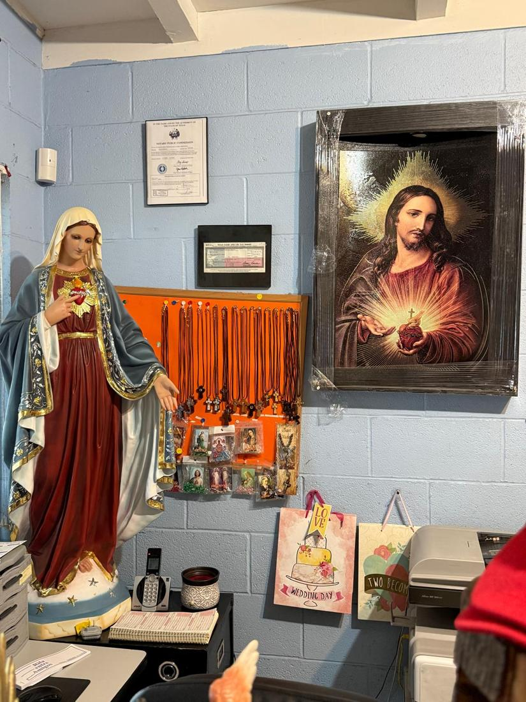
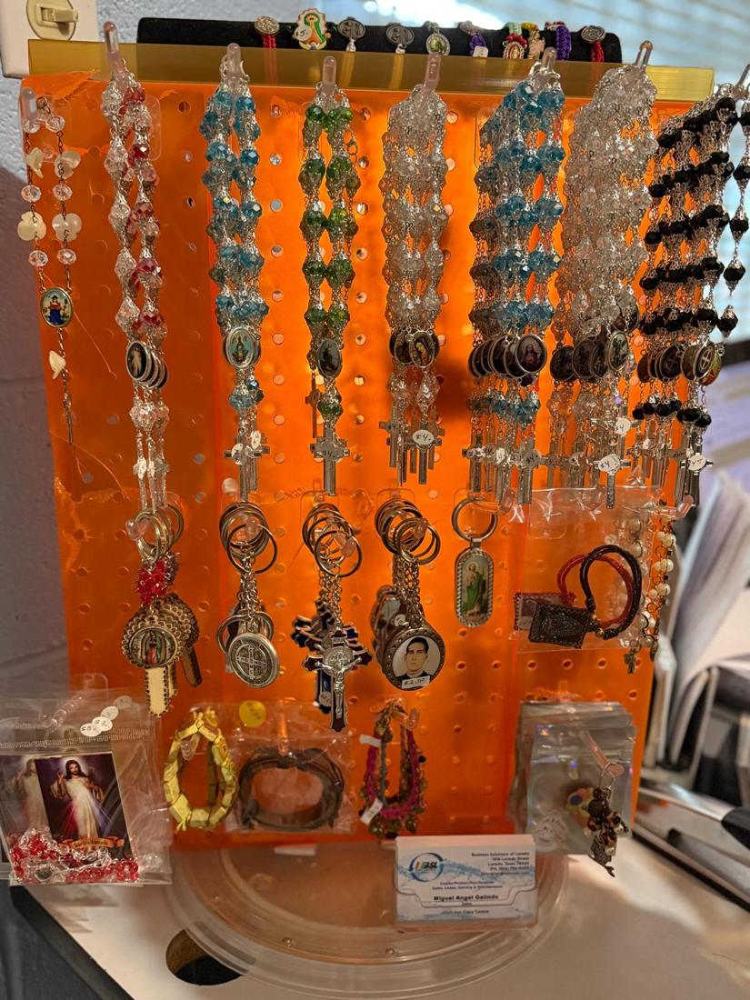

Amor
Regalos que se quedan para siempre
La mamá que busca un Sagrado Corazón para la sala. El abuelo que quiere un rosario para su nieta. La amiga que lleva una medalla al hospital. Aquí cada regalo se elige pensando en la persona que lo va a recibir, y le ayudamos a encontrar el indicado.
“El amor es paciente, es servicial; el amor no tiene envidia.”1 Corintios 13, 4